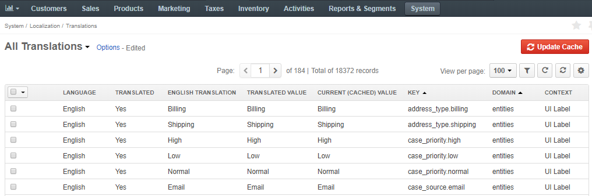
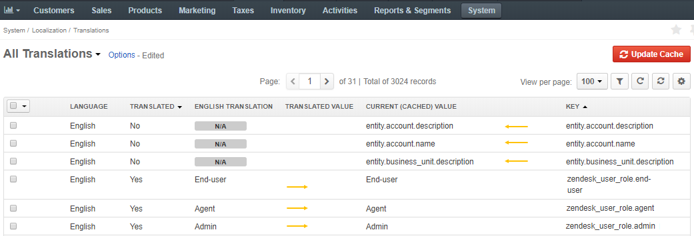
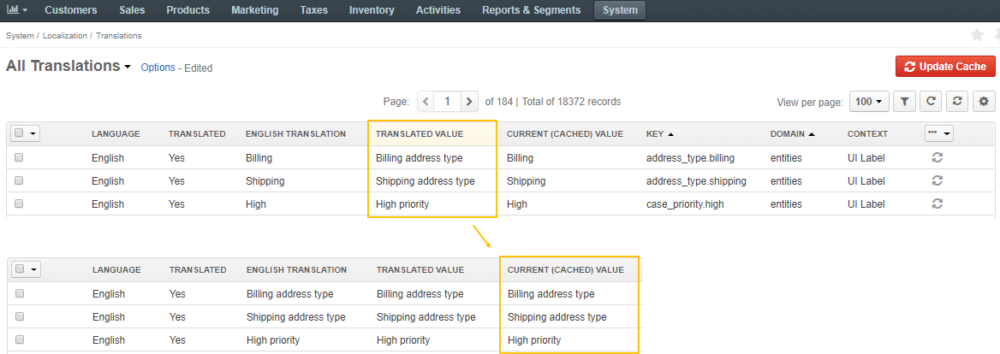
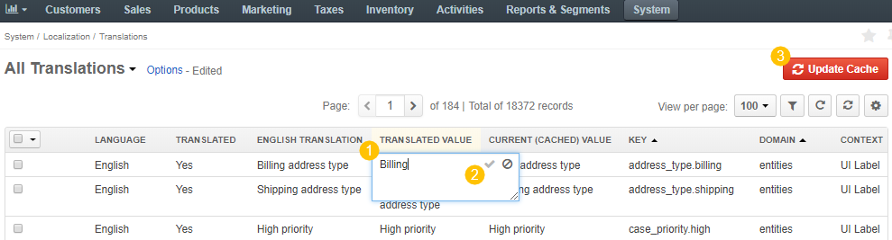
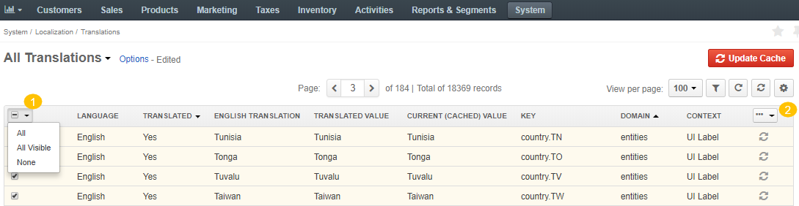

Translations are a collection of visual elements in the Oro application, like labels, information massages, notifications, alerts, workflow statuses, etc.
To add or edit the text translated to the target language, navigate to System > Localization > Translations in the main menu.
The following information about the translations is available in the All Translations list:
| Name | Description |
|---|---|
| LANGUAGE | The language of the text system elements available to the user. |
| TRANSLATED | The status indicates whether the text items are translated to the target language (Yes/No). |
| ENGLISH TRANSLATION | The column contains the english translation of the text items. |
| TRANSLATED VALUE | The translation value of the text item to the target language. |
| CURRENT (CACHED) VALUE | The translation of the system element currently displayed to the user on the UI of the Oro application. |
| KEY | A coded text string that identifies the text system element and is used to find its translation to the target language (e.g. oro.ui.updated_at) in Oro applications. |
| DOMAIN | The logical affiliation to a particular functionality that organises linguistic sources by domain (e.g. tooltips, security, entities, jsmessages, maintenance, install, workflows, messages, validators, HWIOAuthBundle). |
| CONTEXT | The detailed location of the translated functional component (e.g. Workflow “Checkout” -> Name). |
Important
Remember a rule of thumb:
The translations which are currently displayed to the user in the Oro application are located in the Current (cached) value column. This column inherits the values from the Translated value column upon update. If there is no translation provided for a specific language, the Current (cached) value column is populated with the default English translation mentioned in the English translation column. If the system element doesn’t have the English equivalent, the Current (cached) value column takes the value from the Key column.
You can perform the following actions with translations:
View and check the validity of all the available UI element translations. Use search and filters to help find the necessary text element.
If the translations were imported manually or from the Crowdin website as described in the Languages section, they appear in the Translated value column. After the import or an update, click Update Cache on the top right to populate the Current (cached) value column with the updated information from the Translated value column.

Add a translation to any UI element or update the existing one by proceeding a few steps:
Double-click the cell in the Translated Value column.
Type in the translation of the required system items.
Click to save the changes.
Click Update Cache on the top right to enable the translation.

To remove one or more custom translations and roll back to the default translation downloaded from the Crowdin service, click in the left corner of the list header. Confirm the removal by clicking the Reset button.
Hover over the More Options menu at the end of the list header and click Reset to delete multiple custom translations at a time.
